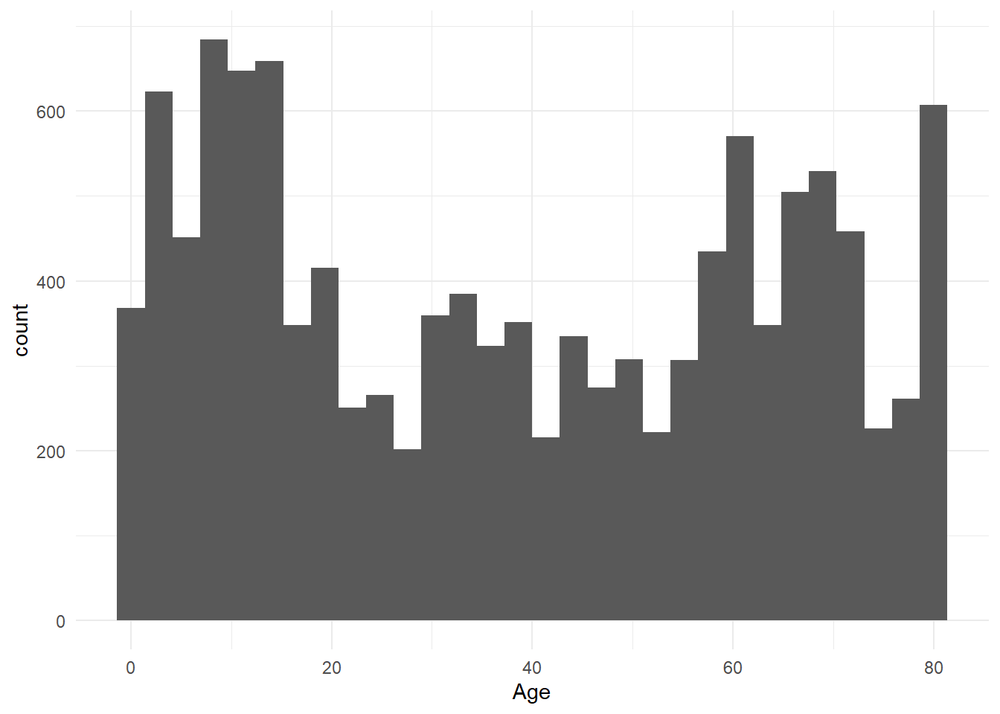
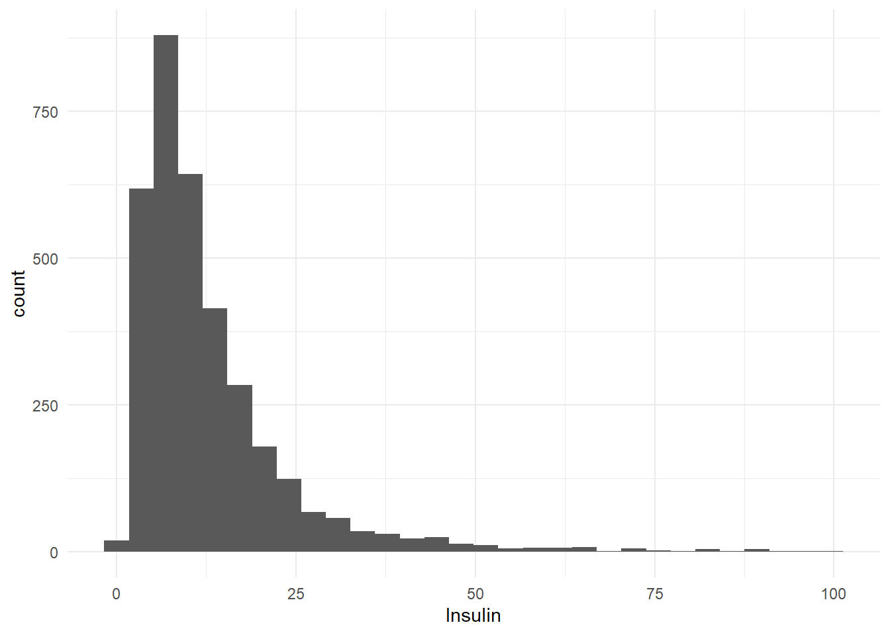
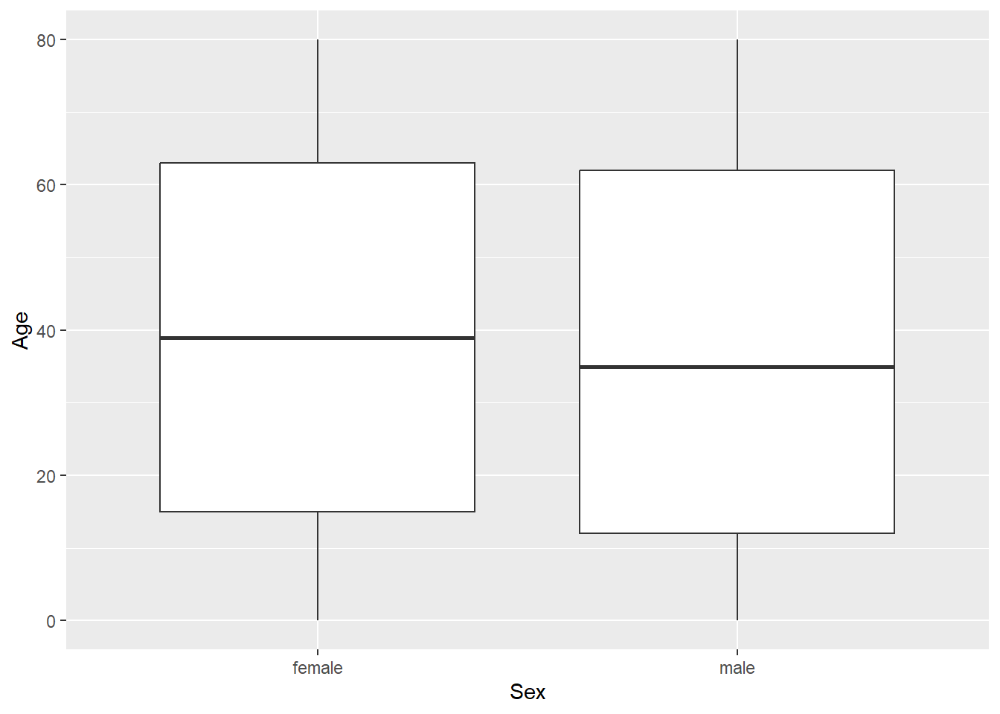

How does fasting influence insulin and cholesterol levels in adult men and women?
In our final project we will look at gender, age, and length of food fast (hours) to understand how different fasting aspect will affect two continuous outcome variables, insulin and cholesterol.
We will also take into account individuals that have diabetes, as their insulin regulation is compromised.
Trends Observed Thusfar
In our visualization we can see that the data has a similar number of men and women, with the most common ages being 0-20 and 60-80. The ages appear to be consistent across gender.
Initially, we wanted to observe fasting across food as well as tea and coffee and alcohol. However, there were not many people who reported fasting from either coffee and tea or alcohol, so this data may not be helpful is our assessment since most of the values for these are missing. The average food fast was 8.59 hours. Food fasting alone has a low correlation with both our insulin and cholesterol levels.
Cholesterol levels appear to be slightly higher in females and insulin levels appear to be slightly lower in females when compared to males. Age does not appear to be strongly correlated with cholesterol. However, we noted that the trends in people with diabetes differ from those without diabetes. Similarly, there was not a strong observation between just age and insulin levels.
Furthermore we found there there was not a correlation between insulin and cholesterol levels.
library("here")
here() starts at C:/Users/nlusk/OneDrive/Documents/BIOST 2141/Project/Biostat-methods-project-
library("haven")
Warning: package 'haven' was built under R version 4.3.3
── Conflicts ────────────────────────────────────────── tidyverse_conflicts() ──
✖ dplyr::filter() masks stats::filter()
✖ dplyr::lag() masks stats::lag()
ℹ Use the conflicted package (<http://conflicted.r-lib.org/>) to force all conflicts to become errors
`stat_bin()` using `bins = 30`. Pick better value with `binwidth`.

From our exploration we can see that the distribution of sex in our dataset is a little bimodal, with more individuals between 0-20 and 60-80. In our numerical summary we can see that the mean is 38.3 years old.
Here we can see that only 29 people fasted from coffee/tea. Those that did fast are displayed in the above boxplot, which shows us that the majority of fasting time lies between ~4-11 hours. From a specific numerical summary we can see that the mean fasting time from coffee and tea was 7.55, and there was some spread with the standard deviation falling at 5.88.
In our exploration of food fast we can see that the average fast last 8.59 hours and that the standard deviation is 5.64. In our visual, we can see that the distribution of food fast is bi-modal, with popular fast lengths ~4 and ~15 hours. After the second peak, the distribution falls drastically with much smaller numbers of individuals fasting for over 20 hours.
Diabetes & Insulin Usage
Data_df|>group_by(Diabetes)|>summarise(n =n())
# A tibble: 3 × 2
Diabetes n
<chr> <int>
1 other 10659
2 yes 1081
3 <NA> 193
Looking at our data we can see that although a majority do not have diabetes, we do have a subgroup of 1081 individuals who answered “yes” in the survey asking if they have ever been diagnosed with diabetes. We also want to show that out of those 1081 individuals 344 are actively taking insulin. This will be something to be aware of as we continue to analyze the data, and we may want to exclude these individuals.
Cholesterol
Data_df|>summarise( mean =mean(Cholesterol, na.rm =TRUE),sd =sd(Cholesterol, na.rm =TRUE))
We can see that cholesterol presents as a unimodal distribution, with a mean around 182mg/dL and sd of 42.3mg/dL. From our histogram, we can see the peak seems to be localized between the 150mg/dL and 250mg/dL range.
Insulin
Data_df|>summarise( mean =mean(Insulin, na.rm =TRUE),sd =sd(Insulin, na.rm =TRUE))
`stat_bin()` using `bins = 30`. Pick better value with `binwidth`.

Finally, looking at our last outcome variable insulin, we can see in our visualizations that there are some pretty extreme outliers. Overall, we obtain a mean insulin level of 14.7uU/mL and a standard deviation of 26.1uU/mL. If we are to restrict our range of insulin to <100uU/mL, we can a better understanding of the pattern for the majority of subjects. When we do so we can see that our mean decreases to 13uU/mL and standard deviation of 11.5uU/mL, showing that the outliers are skewing the summary statistics. We can also see in our new graphs that the majority fall around that single peak near 12.5, and then tapers off by 25uU/mL.
Bivariate Visualization
cor(Data_df$Hrs_Food, Data_df$Cholesterol, use ="pairwise.complete.obs")
[1] 0.03205494
ggplot(data = Data_df, aes(x = Hrs_Food, y = Cholesterol, color =factor(Diabetes)))+geom_point(na.rm =TRUE)+geom_smooth(method ='lm', se =FALSE, aes(color =factor (Diabetes), group =factor(Diabetes)))+labs(color ="Diabetes Status")
#ggplot(data = Data_df, aes(x = Hrs_Alcohol, y = Cholesterol, color = factor(Diabetes)))+# geom_point(na.rm = TRUE)#ggplot(data = Data_df, aes(x = Hrs_CoffeeTea, y = Cholesterol, color = factor(Diabetes)))+# geom_point(na.rm = TRUE)
This plot shows the hours fasted and its impact on cholesterol for the whole population. The correlation is .03205494. The scatter plot hows that those with diabetes are less impacted than those without by hours fasted. We can see that there are less values between 20 and 30 hours fasted from food.
cor(Data_df$Hrs_Food, Data_df$Insulin, use ="pairwise.complete.obs")
[1] -0.1212528
ggplot(data = Data_df, aes(x = Hrs_Food, y = Insulin, color =factor(Diabetes)))+geom_point(na.rm =TRUE)+geom_smooth(method ='lm', se =FALSE, aes(color =factor (Diabetes), group =factor(Diabetes)))+labs(color ="Diabetes Status")
#ggplot(data = Data_df, aes(x = Hrs_Alcohol, y = Insulin, color = factor(Diabetes)))+# geom_point(na.rm = TRUE)#ggplot(data = Data_df, aes(x = Hrs_CoffeeTea, y = Insulin, color = factor(Diabetes)))+# geom_point(na.rm = TRUE)
The correlation of hours fasted from food and insulin levels is -.1212528. From the scatterplot we can see that with the exception of one person who had an insulin level over 600 uU/ml, all of the data points above 200 uU/ml have diabetes. Additionally, the line of people with diabetes appears to decrease, while line of people who do not appears fairly flat. Furthermore, in the graph colored for people taking insulin, we can see that while the people with diabetes are similar to those who are taking insulin, as is expected, they are not exactly the same. The line of people taking insulin appears to have a smaller average value of the slope than those with diabetes.
The mean cholesterol level for women (186.1772 mg/dL) was about 10 mg/dL higher than the mean for men (176.1122 mg/dL). Both men ad women have similar standard deviation, about 42mg/dL. The box plots both have many outliers with high cholesterol, and the females have one low outlier with a cholesterol level of 63. The male and female box plots appear to have a similar shape, but the mens distribution is centered around a median of 173 mg/dL while the women’s is centered around 182, and is therefore shifted higher. Since both medians are lower than the means, and there are so many high outliers, we can conclude that the data is skewed right.
The female mean insulin level is 14.13882 uU/ml, this is about 1.3 less than the mean insulin level of the males of 15.42506. The males have a median of 10.040 uU/ml, since this is lower than the mean, we can conclude that this is skewed right. The same is true for the females who have a median of 9.345 uU/ml. Since the bar graph shows the mean values because the number of men and women in the sample are different, we can see that the means vary.
cor(Data_df$Age, Data_df$Cholesterol, use ="pairwise.complete.obs")
[1] 0.2225634
ggplot(data = Data_df, aes(x = Age, y = Cholesterol, color =factor(Diabetes)))+geom_point(na.rm =TRUE)+geom_smooth(method ='lm', se =FALSE, aes(color =factor (Diabetes), group =factor(Diabetes)))+labs(color ="Diabetes Status")
The correlation between age and cholesterol level is .2225634. Our dot plot shows that the values vary across ages, the trend increasing slightly. However, it is important to note that the trend line of people with diabetes following the opposite pattern, as age increases in people with diabetes, the cholesterol level decreases.
cor(Data_df$Age, Data_df$Insulin, use ="pairwise.complete.obs")
[1] -0.01276559
ggplot(data = Data_df, aes(x = Age, y = Insulin, color =factor(Diabetes)))+geom_point(na.rm =TRUE)+geom_smooth(method ='lm', se =FALSE, aes(color =factor (Diabetes), group =factor(Diabetes)))+labs(color ="Diabetes Status")
The correlation of Age and Insulin level is -0.01276559. The scatterplot shows most of the values consistent with age. The values that we noted had high insulin levels appear to mostly be in adults over 55. The outlier without diabetes with a high insulin level is a very young participant. Most of the non-diabetes subjects appear to have consistent insulin levels throughout the age groups.
# A tibble: 2 × 12
Sex n mean median min max q25 q75 var sd IQR range
<chr> <int> <dbl> <dbl> <dbl> <dbl> <dbl> <dbl> <dbl> <dbl> <dbl> <dbl>
1 female 6358 39.4 39 0 80 15 63 641. 25.3 48 80
2 male 5575 37.1 35 0 80 12 62 670. 25.9 50 80
ggplot(data = Data_df, aes(x = Sex, y = Age))+geom_boxplot()

The mean age of the females is 39.37 years old and the mean age of the males is 37.12 years old. Both populations have minimum values of 0 and maximum values of 80. Both also have standard deviations around 25. Looking at the box plots, we can see that the men and women samples look to be similar across the agr groups.
cor(Data_df$Cholesterol, Data_df$Insulin, use ="pairwise.complete.obs")
[1] -0.08358265
ggplot(data = Data_df, aes(x = Cholesterol, y = Insulin, color =factor(Diabetes)))+geom_point(na.rm =TRUE)+geom_smooth(method ='lm', se =FALSE, aes(color =factor (Diabetes), group =factor(Diabetes)))+labs(color ="Diabetes Status")
The correlation between the insulin and cholesterol levels is -0.08358265, As we can see from the graph, many of the outliers with very high insulin have lower cholesterol levels.